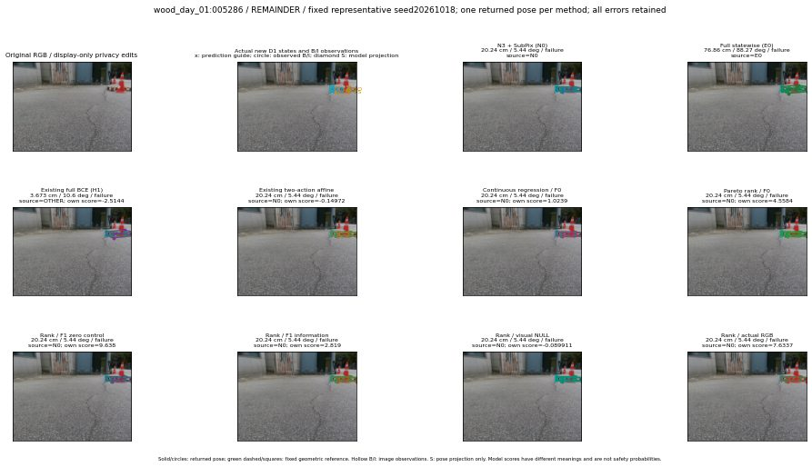

실선은 반환 자세, 초록 점선은 고정 기하 참조입니다. S는 영상 관측이 아닙니다. 점수는 모델별 의미가 다르며 보정된 안전 확률이 아닙니다. 개인정보 처리는 표시 사본에만 적용했습니다.
| 방법·seed | 위치 / 회전 / 공동성공 | 실제 출처 | 선택 후보 | 각 모델 자체 점수 |
|---|---|---|---|---|
| N0 | 20.24 cm / 5.44 deg / failure | N0 | N/A | N/A |
| E0 | 76.86 cm / 88.27 deg / failure | E0 | N/A | N/A |
| E0_REGENERATED | 76.86 cm / 88.27 deg / failure | E0 | E0_REGENERATED | N/A |
| POSEFIX_SUBPIX_PF_ANCHOR | 15.82 cm / 3.364 deg / failure | OTHER | N/A | N/A |
| POSEFIX_SUBPIX_YOLO_ANCHOR | 15.82 cm / 3.364 deg / failure | OTHER | N/A | N/A |
| D1_H1_MLP_s20261018 | 3.673 cm / 10.6 deg / failure | OTHER | WD0/ORIGINAL_WD/sample/3 | -2.514406681060791 |
| D1_H1_MLP_s20261019 | 3.673 cm / 10.6 deg / failure | OTHER | WD0/ORIGINAL_WD/sample/3 | -2.549227237701416 |
| D1_H1_MLP_s20261020 | 3.673 cm / 10.6 deg / failure | OTHER | WD0/ORIGINAL_WD/sample/3 | -2.6862564086914062 |
| D1_H1_PAIR_MLP_s20261018 | 20.24 cm / 5.44 deg / failure | N0 | N0 | -1.23776113986969 |
| D1_H1_PAIR_MLP_s20261019 | 20.24 cm / 5.44 deg / failure | N0 | N0 | -1.6010174751281738 |
| D1_H1_PAIR_MLP_s20261020 | 20.24 cm / 5.44 deg / failure | N0 | N0 | -2.0511863231658936 |
| D1_H1_PAIR_ROLE_AFFINE_s20261018 | 20.24 cm / 5.44 deg / failure | N0 | N0 | -0.14971935749053955 |
| D1_H1_PAIR_ROLE_AFFINE_s20261019 | 20.24 cm / 5.44 deg / failure | N0 | N0 | -0.6449222564697266 |
| D1_H1_PAIR_ROLE_AFFINE_s20261020 | 20.24 cm / 5.44 deg / failure | N0 | N0 | -0.2581245005130768 |
| R_CONT_F0_s20261018 | 20.24 cm / 5.44 deg / failure | N0 | N0 | 1.0239213705062866 |
| R_CONT_F0_s20261019 | 20.24 cm / 5.44 deg / failure | N0 | N0 | 1.137911319732666 |
| R_CONT_F0_s20261020 | 20.24 cm / 5.44 deg / failure | N0 | N0 | 1.0853220224380493 |
| R_ORDER_F0_s20261018 | 20.24 cm / 5.44 deg / failure | N0 | N0 | 4.558443069458008 |
| R_ORDER_F0_s20261019 | 20.24 cm / 5.44 deg / failure | N0 | N0 | 0.6926841735839844 |
| R_ORDER_F0_s20261020 | 20.24 cm / 5.44 deg / failure | N0 | N0 | -3.6004433631896973 |
| R_ORDER_F1_ZERO_s20261018 | 20.24 cm / 5.44 deg / failure | N0 | N0 | 9.638020515441895 |
| R_ORDER_F1_ZERO_s20261019 | 20.24 cm / 5.44 deg / failure | N0 | N0 | -0.5354029536247253 |
| R_ORDER_F1_ZERO_s20261020 | 20.24 cm / 5.44 deg / failure | N0 | N0 | 4.212294101715088 |
| R_ORDER_F1_s20261018 | 20.24 cm / 5.44 deg / failure | N0 | N0 | 2.819021224975586 |
| R_ORDER_F1_s20261019 | 20.24 cm / 5.44 deg / failure | N0 | N0 | 3.713883399963379 |
| R_ORDER_F1_s20261020 | 20.24 cm / 5.44 deg / failure | N0 | N0 | 4.565694808959961 |
| V_ORDER_NULL_s20261018 | 20.24 cm / 5.44 deg / failure | N0 | N0 | -0.08991079032421112 |
| V_ORDER_NULL_s20261019 | 20.24 cm / 5.44 deg / failure | N0 | N0 | 0.35418739914894104 |
| V_ORDER_NULL_s20261020 | 20.24 cm / 5.44 deg / failure | N0 | N0 | 2.6586263179779053 |
| V_ORDER_RGB_s20261018 | 20.24 cm / 5.44 deg / failure | N0 | N0 | 7.63370418548584 |
| V_ORDER_RGB_s20261019 | 4.875 cm / 9.228 deg / failure | OTHER | WD0/ORIGINAL_WD/sample/27 | 1.3249993324279785 |
| V_ORDER_RGB_s20261020 | 20.24 cm / 5.44 deg / failure | N0 | N0 | -6.4548845291137695 |